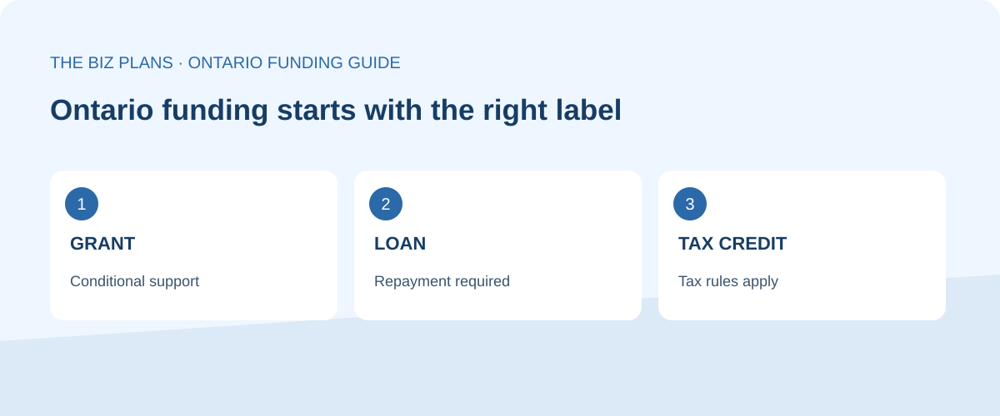
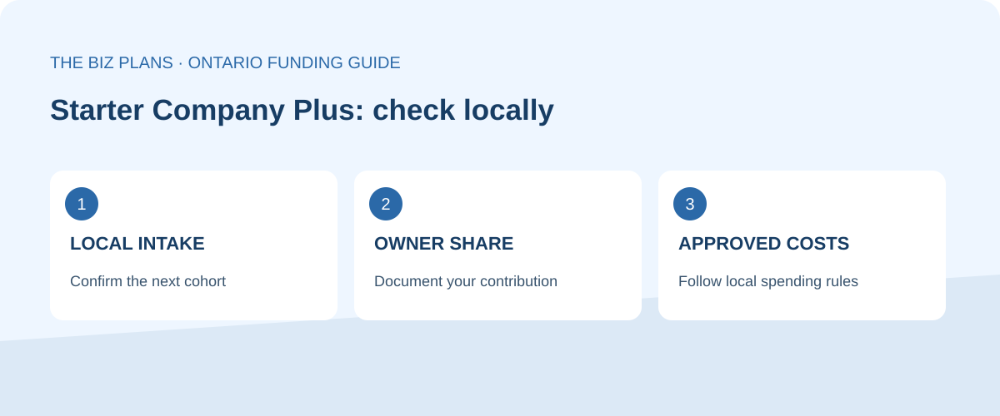
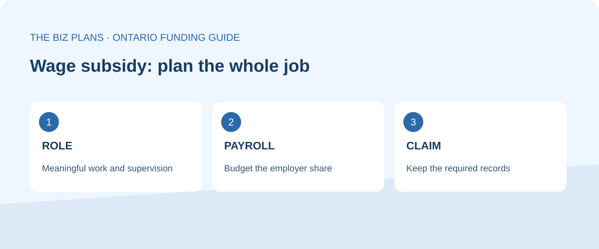
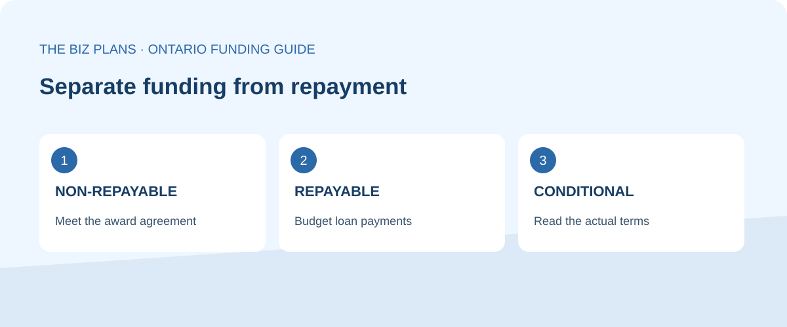
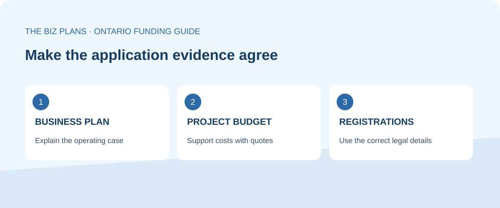
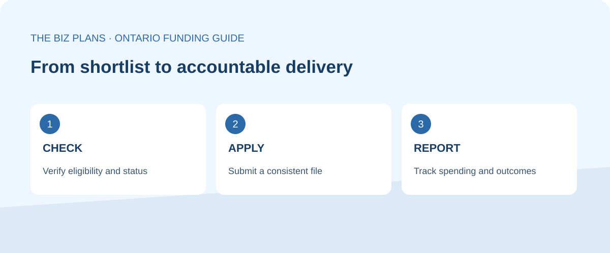

Small business grants Ontario owners can actually use are targeted programs with conditions, rather than a universal pot of free startup money. Many search results mix genuine grants with bank loans, repayable government contributions, wage subsidies and tax credits. This guide separates those categories so you can build a realistic shortlist and avoid counting borrowed money as a gift. The right question is which activity qualifies, when the program accepts applications and whether your business can meet its share of the cost.
If your project also needs repayable funding, our business loans in Canada guide maps borrowing options and explains the lender document package. Keep grants and debt separate in the funding schedule.
Ontario small business grants can help with a defined launch, hiring need or business project, but they rarely cover everything required to open and operate a company. A non-repayable contribution still comes with an agreement: eligible costs, records, milestones and reporting matter. A reimbursement also creates a cash-flow gap if you must pay suppliers before receiving support. Treat an unapproved application as a possibility, rather than money available to spend.
Below, you will find official program links, clear funding labels and practical preparation advice. Start with your location, business stage and use of funds, then confirm the current terms with the administrator. Amounts are in Canadian dollars. This is a planning guide; the official rules and your signed agreement govern any award.
Last checked: . Status describes the information available on that date; it is not a promise that funding remains available.

True grants & non-repayable contributions
When looking for grants for small business in Ontario, screen the applicant and the project separately. An eligible business can propose an ineligible expense. A suitable project can miss a local intake. The opportunities below include one currently accepting regional initiative, a locally delivered grant requiring an intake check, a wage subsidy with an announced opening, and a closed digital grant retained to prevent confusion.
Starter Company Plus — local training, mentoring and a competitive grant
This Ontario program supports entrepreneurs starting, expanding or buying a small business. The provincial overview lists a grant of up to $5,000 and requires a cash or in-kind contribution of at least 25% of the grant amount. Applicants must be Ontario residents, Canadian citizens or permanent residents, aged 18 or older, and not attending or returning to full-time school. Official Ontario overview and grant conditions.
What it covers depends on the local delivery rules. For example, Waterloo Region lists business equipment, materials and marketing among eligible spending, subject to category restrictions, while excluding items such as rent and debt repayment. These are local rules, not a province-wide spending permission. Ask your own Small Business Enterprise Centre to approve the intended budget before ordering anything. Official Waterloo Region delivery rules.
Status: check local intake. There is no single province-wide deadline on the overview. Waterloo’s page illustrates why a status check matters: its introductory text says applications are open, but its published cohort schedule gives a September 17, 2026 closing date. We therefore do not describe that cohort as open. Ask the local centre for the next confirmed intake, participation requirements and eligible spending period. Training admission also does not guarantee a grant.

Canada Summer Jobs — a wage subsidy, with the next intake announced
Canada Summer Jobs helps employers create summer work experiences for young people. The current official page identifies private-sector employers with 50 or fewer full-time employees as potential applicants, and youth participants aged 15 to 30. For private and public employers, the published subsidy is up to 50% of the provincial or territorial minimum wage. It is not half of every employer’s actual salary bill. Official employer eligibility and subsidy information.
Status: opening soon. As checked on October 26, the official page announces the 2027 application call for October 27, 2026. It says full details will be updated when the intake begins. The previous application period is closed; do not reuse its deadline or employment dates for the new call. Confirm the new guide before applying. Official intake announcement.
Build the hiring case around real work, suitable supervision and the payroll you can afford if the application is unsuccessful. Keep the role description, hiring schedule and operating forecast consistent. A subsidy supports an eligible job; it is not unrestricted working capital for the owner, equipment or rent. Recheck the applicable wage rules when the job takes place and retain the employment records required by the agreement.

FedDev Ontario Regional Tariff Response Initiative — targeted non-repayable support
Status: accepting applications on the official page at the check date. This southern Ontario initiative includes non-repayable liquidity assistance of up to $2 million and up to 50% of eligible costs, plus non-repayable pivot-project support of up to $1 million and up to 50% of eligible costs. Larger pivot projects can involve repayable funding, so the initiative must not be described as entirely a grant. Official funding types, limits and status.
The applicant rules focus on incorporated for-profit businesses operating in southern Ontario, with at least $1 million in annual revenue in one or both of the last two fiscal years, viability before tariffs and demonstrated trade-disruption exposure. Retail and local consumer services are generally ineligible. Below-threshold firms should contact the agency about potential options rather than assume eligibility. Official applicant criteria and exclusions.
Liquidity support concerns eligible operating pressures; pivot projects concern adaptation such as productivity improvements, technology adoption or market diversification. The published completion limits differ: liquidity assistance must end no later than March 31, 2028, and pivot projects no later than March 31, 2029. These are funding-period limits, not application deadlines. Official project periods. Regional agency programs differ across Ontario; do not assume these southern Ontario terms apply in the north.
Digital Main Street — grant portal closed
Digital Main Street remains a useful digital-skills resource for main-street businesses, but its official site states that the Digital Transformation Grant portal is closed. Digital assessments and online training remain available. We therefore exclude it from the currently open grant shortlist and do not advertise a historical grant amount as available funding. Official portal closure notice and current resources.
If you need a website, point-of-sale upgrade or digital marketing work, make the decision on the business case and your available funds. A free course, an assessment and a cash grant are different forms of support. Before assuming a replacement grant exists, find a current official application route, written eligibility rules and a confirmed intake. Old recipient stories can show what happened previously without establishing that you can apply today.
Loans people mistake for grants
A loan must be repaid under its contract, even when a public institution supports it. Government participation can improve access to financing without removing interest, fees or the lender’s assessment. Start with our CSBFP hub to understand the distinction between a lender’s credit decision and a program’s eligibility rules. The three routes below belong in a financing plan, not in a total labelled free grants.
Canada Small Business Financing Program — lender-delivered loans
The CSBFP supports access to loans through financial institutions. The official maximum is $1.15 million per borrower, comprising up to $1 million in term loans and $150,000 in lines of credit; cost-category limits also apply. Most eligible businesses have gross annual revenue of $10 million or less, and farming businesses are excluded. The financial institution decides whether to lend. Official CSBFP eligibility, limits and application route. Status: contact a participating lender; there is no grant competition deadline on this route. Read our CSBFP guide before preparing the request.
BDC Small Business Loan — commercial financing
BDC’s Small Business Loan advertises borrowing of up to $350,000 for business projects or expenses, subject to its current requirements and credit decision. It is a repayable loan, not a government grant. Status: an online application route is available on the official product page; approval and terms are individual. Official BDC Small Business Loan. Compare its purpose and repayment schedule with the CSBFP financing route and our BDC planning guide. Budget the debt payments before treating the proceeds as affordable.
Futurpreneur — startup loans paired with mentorship
Futurpreneur’s Startup Program offers eligible entrepreneurs aged 18 to 39 up to $75,000 in loan financing, including BDC financing, plus mentorship. The official page calls it an equity-free loan: equity-free means you do not give up ownership through that loan, not that repayment disappears. Canadian citizenship or permanent residence and other eligibility conditions apply. Status: the official page provides a contact and submission route; check your fit directly. Official Futurpreneur Startup Program. Use our Futurpreneur guide and CSBFP hub to compare preparation needs. Futurpreneur belongs here rather than in the true-grant list.

Turn the shortlist into a first draft
Organize your business model, market evidence, project costs and assumptions before completing a funder’s forms. Verify every generated claim and use the administrator’s own checklist.
Use the free AI business plan generatorTax credits & incentives
Tax incentives follow tax and certification rules rather than a simple grant application. Some can be refundable; others reduce tax payable. Neither should automatically be budgeted as an upfront cheque. Talk to your accountant about qualification, claim deadlines, supporting evidence, associated corporations and interactions with other assistance before including a credit in your forecast. The summaries below identify potential routes, not a calculation of your entitlement.
Federal SR&ED — eligible research and experimental development
The federal Scientific Research and Experimental Development framework provides an income deduction and an investment tax credit for qualifying work. CRA’s current guidance also describes optional pre-claim approval, while explaining that a claim must still be submitted. Amounts depend on the applicable rules and claimant circumstances; there is no single rate appropriate to every small business. Status: tax-claim route, subject to the relevant reporting deadline. Official CRA SR&ED guidance. Keep technical evidence alongside cost records, and ask a qualified adviser whether the work meets the scientific or technological test.
Ontario Innovation Tax Credit — a refundable research credit
CRA describes the Ontario Innovation Tax Credit as an 8% refundable credit on qualified Ontario expenditures and eligible repayments. Corporate eligibility and expenditure limits apply, including rules involving associated corporations. Status: claimed with the relevant corporate return and schedules, rather than through a grant intake. Official CRA Ontario Innovation Tax Credit rules. A business using technology is not automatically doing qualifying research. Have your accountant reconcile the Ontario and federal claims and any project assistance, instead of simply adding advertised percentages together.
Ontario Interactive Digital Media Tax Credit — a specialist product incentive
Ontario Creates describes a refundable credit with rates of 40% or 35%, depending on the qualifying product and corporation category. It concerns eligible interactive digital media production, not a general subsidy for buying software or building a small-business website. Most websites are excluded. Status: certification and tax-claim process; verify current product rules and submission requirements. Official Ontario Creates OIDMTC guidance. Ask about qualification before committing development costs. For ordinary digital adoption, assess the operational return without assuming that this specialist production credit will cover the spending.
How to apply — what funders actually check
A strong application makes the decision easy to assess. It connects the program’s objective with a defined activity, evidence that the business can carry it out and a budget that survives scrutiny. Writing quality matters, but a polished narrative cannot repair an ineligible applicant, unsupported matching funds or spending outside the approved period. Build the file around the actual checklist, then use the plan to explain how all the pieces fit together.
Start with eligibility, timing and the permitted use of funds
Record the official source, date checked, applicant restrictions, location, business stage, project scope and next application step. Save a copy of the applicable guide for your records. Ask the administrator about any unclear issue before paying for a lengthy application. Confirm whether ordering, signing a contract or paying a deposit before approval makes an expense ineligible. Do not assume that a supplier’s willingness to wait for payment changes the program’s project-start rule.
Separate selection from compliance. Meeting baseline rules can allow an application to be assessed without guaranteeing selection or the maximum award. A competitive proposal should explain the measurable outcome and why the spending is proportionate. Describe what changes for the business and the community, who will deliver the work and how progress will be documented. Avoid promising jobs or revenue that the capacity and sales evidence cannot support.
Business plan: demonstrate a workable operation
Prepare a concise description of the customer, problem, offer, competitors, pricing, sales channels, staffing and delivery process. Support market claims with dated evidence relevant to your Ontario location. Explain the owner’s experience and gaps that will be covered by employees, suppliers or advisers. If you are expanding, distinguish current operations from the proposed project so the reviewer can see what the support would actually change.
Use our business plan writing services when you need help organizing research and the funding case. For a first draft, the free AI generator can structure your answers. Compare assumptions with the Canadian business plan benchmarks study, while recognizing that national statistics do not establish demand for your particular business. Replace generic text with your own evidence before submitting.

Financial projections: show the cash before reimbursement
Prepare a sources-and-uses schedule that separates owner funds, approved financing, requested support and any remaining gap. Link each project cost to a quote or other support. Then build monthly cash flow that follows actual payment timing, including deposits, inventory, payroll, taxes and customer collections. A profitable annual forecast can still conceal a month when there is no cash to pay staff or suppliers.
Show a case without the award and another with delayed reimbursement. Explain how any matching contribution will be funded and documented. Include borrowing costs where a loan bridges the project. Avoid counting the same cost twice across programs, and ask the administrator and accountant how assistance stacking and recoverable taxes affect the budget. Our financial modelling services and financial forecasting guide can help you connect operations to the numbers.
Registrations, records and a complete submission
Use the correct legal name consistently across the application, registrations, banking and quotations. Gather the registration or incorporation records, ownership information, licences, financial records and tax information that the specific administrator requests. Confirm who is authorized to sign. An address or ownership mismatch can lead to questions even where the underlying project is sound. Keep the final submitted package and its confirmation in a place the responsible owner can find.
After submission, answer follow-up requests with a clear audit trail. If approved, read the agreement before spending and build a claims calendar around its actual requirements. Assign responsibility for invoices, proof of payment, payroll records and progress reporting. Ask permission before making material project changes. A non-repayable award can still be recovered when its conditions are breached; the word grant does not remove the obligations in the agreement.

Ontario funding comparison table
Use this table to decide which official guide to read first. The amounts are ceilings or stated rates, not offers to your business. Status is as of October 26, 2026. A project completion date should never be substituted for an application deadline, and a visible application route does not establish that an individual applicant qualifies.
| Program | Type | Amount | Who qualifies | Status |
|---|---|---|---|---|
| Starter Company Plus | Grant | Up to $5,000; contribution required | Eligible Ontario entrepreneurs; local rules | Check local intake |
| Canada Summer Jobs | Wage subsidy | Private employers: up to 50% of minimum wage | Eligible employers; private firms ≤50 full-time staff | 2027 call announced for Oct. 27, 2026 |
| FedDev Ontario RTRI | Non-repayable / repayable contributions | Liquidity up to $2m; non-repayable pivot up to $1m; each up to 50% eligible costs | Tariff-affected southern Ontario businesses; see criteria | Accepting applications |
| Digital Main Street DTG | Grant (closed) | No current award advertised here | Past main-street business grant; current resources differ | Portal closed |
| CSBFP | Loan | Up to $1.15m combined; sublimits apply | Eligible Canadian small businesses; lender decision | Contact participating lender |
| BDC Small Business Loan | Loan | Up to $350,000 | Applicants meeting current BDC requirements | Online application route |
| Futurpreneur Startup Program | Loan + mentorship | Up to $75,000 including BDC financing | Eligible Canadian citizens / permanent residents aged 18–39 | Contact / submission route |
| SR&ED | Tax incentives | Depends on claimant and eligible work | Qualifying research and development in Canada | Tax-claim deadlines apply |
| Ontario Innovation Tax Credit | Refundable tax credit | 8%; expenditure limits apply | Qualifying corporations with Ontario SR&ED | Corporate tax-claim route |
| OIDMTC | Refundable tax credit | 35% or 40%; category rules apply | Qualifying corporations and eligible digital products | Certification and tax-claim route |
Frequently asked questions
Are there really free grants for Ontario small businesses?
Yes, genuine grants and non-repayable contributions exist, but they target particular applicants and activities. Starter Company Plus is one example to investigate locally; the regional tariff initiative is a more specialized route. Free does not mean automatic, unrestricted or free of reporting obligations. Confirm the current intake and written conditions, and distinguish a grant from a repayable contribution, a loan or a tax credit before including it in your funding plan.
What grants can a startup get in Ontario?
Starter Company Plus is a relevant starting point for eligible entrepreneurs, subject to the local intake and program rules. Ontario grants for startups are not a universal entitlement, and some programs require operating history or a particular project. A startup planning eligible summer employment can also check Canada Summer Jobs when its intake opens. Futurpreneur can be relevant to younger founders, but its Startup Program provides loans and mentorship rather than a grant.
Do I need a business plan to apply for a grant?
It depends on the program. Some applications require a business plan, while others use detailed project forms and budgets. Waterloo Region’s Starter Company Plus process explicitly includes a plan and pitch. Even when a separate plan is not requested, prepare the underlying market evidence, operating assumptions, project costs and cash flow. Follow the administrator’s requested format, and check that the figures in every attachment match the application.
What's the difference between a grant and the CSBFP loan?
A grant is normally non-repayable when you comply with its agreement. A CSBFP loan is financing issued by a financial institution and repayable under the loan contract. The program shares risk with lenders; it does not turn the borrower’s debt into free money. Lender approval, eligible costs, fees and repayment capacity still matter. Compare the actual agreements and the cash-flow consequences rather than relying on a government-backed label.
How long do grant applications take?
There is no reliable single timeline across Ontario programs. Time depends on the intake, completeness of your file, assessment, follow-up questions and agreement process. Separate preparation time from decision time and from payment time after approval. Ask the administrator for the current schedule and whether costs incurred before approval qualify. Keep enough cash to operate if a decision or reimbursement is delayed, and avoid treating an expected award as confirmed funding.
Where can I get help with the application and plan?
Start with the official administrator or your local Small Business Enterprise Centre for eligibility and intake questions. An accountant can advise on tax credits, assistance interactions and financial records. The Biz Plans can help prepare the business plan, research and projections, and its free generator can organize an initial draft. Professional assistance does not guarantee selection, and the owner should understand and verify every claim before signing the application.
For help preparing your own evidence, explore our business plan services, use the free generator, or contact The Biz Plans about the scope of your project. For eligibility decisions, use the official program contacts linked above.
About the author

Written by Atul Jagga, CPA Ontario — Founder of The Biz Plans, Toronto. MBA Finance & Strategy (UBC); 20+ years in corporate finance and consulting involving RBC, BMO, and CIBC. Since 2016, Atul has written bank-financing and investor business plans for Canadian startups and small businesses.
Prepare a funding case you can explain
Bring your official program checklist, supplier quotes, owner contribution and project timeline. We can help connect the business plan and financial projections to the funder’s questions.
Explore business plan services Contact The Biz Plans